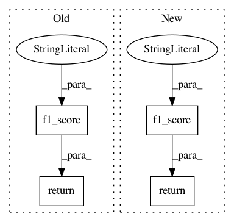

69dd0827d09eae0b4e6b95df854b2814175c9248,examples/ppi.py,,test,#Any#,59
Before Change
y, pred = torch.cat(ys, dim=0), torch.cat(preds, dim=0)
if pred.sum().item() == 0:
return 0
return metrics.f1_score(y.numpy(), pred.numpy(), average="micro")
for epoch in range(1, 101):
loss = train()
After Change
preds.append((out > 0).float().cpu())
y, pred = torch.cat(ys, dim=0).numpy(), torch.cat(preds, dim=0).numpy()
return f1_score(y, pred, average="micro") if pred.sum() > 0 else 0
for epoch in range(1, 101):
loss = train()
In pattern: SUPERPATTERN
Frequency: 3
Non-data size: 4
Instances
Project Name: rusty1s/pytorch_geometric
Commit Name: 69dd0827d09eae0b4e6b95df854b2814175c9248
Time: 2019-04-10
Author: matthias.fey@tu-dortmund.de
File Name: examples/ppi.py
Class Name:
Method Name: test
Project Name: rusty1s/pytorch_geometric
Commit Name: 0880e905186997ec6545a65c277a4848e0505eed
Time: 2019-04-08
Author: matthias.fey@tu-dortmund.de
File Name: examples/ppi.py
Class Name:
Method Name: test
Project Name: rusty1s/pytorch_geometric
Commit Name: 49675c507e5afa9165e378fd738a15a16f323078
Time: 2019-06-13
Author: matthias.fey@tu-dortmund.de
File Name: examples/geniepath.py
Class Name:
Method Name: test